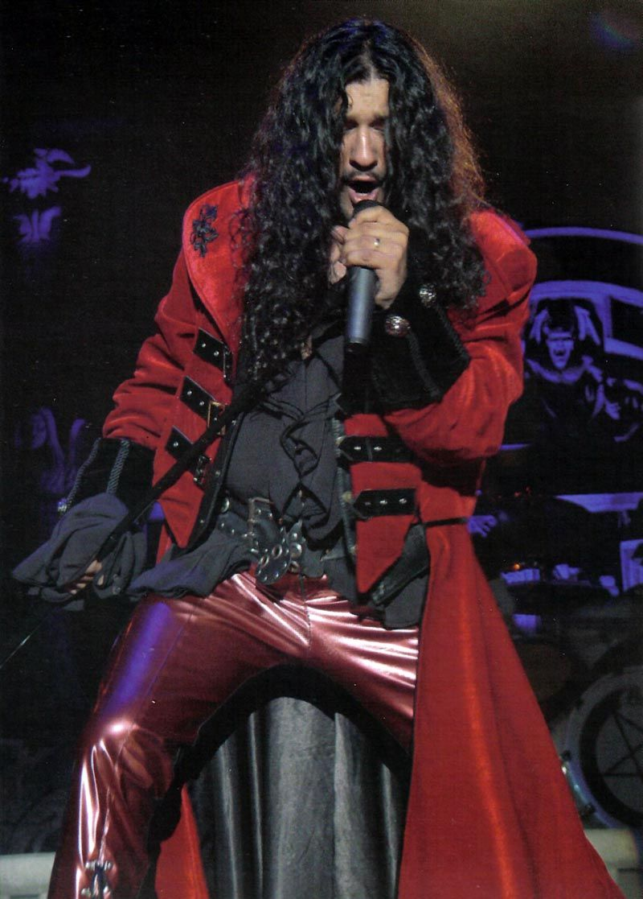

José Mario Martínez Arroyo (La Paz, Bolivia, 2 de Junio de 1971), más conocido como José Andrëa (añadiendo el nombre «Andrea» por su primera hija)1 es un cantante de nacionalidad boliviano-española conocido por su trabajo con el grupo de folk metal Mägo de Oz. Actualmente es vocalista y líder de la banda José Andrëa y Uróboros.
José Andrëa en un concierto de Mägo de Oz. Nació en La Paz, Bolivia, pero se crio en Madrid, en el barrio de Hortaleza, considerándose madrileño de adopción. Comenzó tocando la batería en un grupo escolar a la edad de 14 años. Después de que el cantante del grupo se cambiara de colegio, José lo sustituyó a la espera de encontrar un reemplazo. Es en ese momento que casualmente comienza a vislumbrar poco a poco la capacidad vocal que posee y comienza a tomar clases de música. Tal era su talento que tanto su madre como un profesor de música le insistieron en que tomara clases de canto y más adelante fuera al conservatorio.
En el año 1995 ingresó como vocalista oficial a Mägo de Oz. Dieciséis años más tarde, el 24 de octubre de 2011,
Mägo de Oz anunció en un comunicado en su web oficial que José Andrëa dejaba la banda, siendo la gira por
América y España subsiguientes sus últimos actos con la banda española.
Tras desempeñarse como cantante en varias formaciones del panorama madrileño de heavy metal, entre ellas Easy Rider,4 llegado 1996, José Andrëa se convirtió en el nuevo cantante oficial del grupo de rock español Mägo de Oz. Varias nominaciones y premios a "Mejor cantante masculino" le han otorgado la fama, entre ellas las del Rockferendum de MariskalRock5 donde ganó desde 2005 hasta 2008, y quedó segundo en los años 2009, 2010 y 2011.
